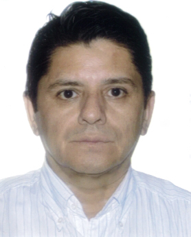

Con más de 10 años de experiencia en la gestión del mantenimiento de máquinas de producción de bebidas carbonatadas
Educación
- Ingeniero en Comunicaciones y Electrónica
- 1986-1991. Instituto Politécnico Nacional
- ESIME-Unidad Profesional «Adolfo López Mateos»

Experiencia Profesional
- Subgerente de Mantenimiento Industrial
- 1999-2013. Yoli de Acapulco, S.A de C.V.
- Embotellador Coca-Cola
- Planta Cayaco
- Profesor de Asignatura, nivel bachiller
- 199-199. CECyT No. 8 «Narciso Bassols García»
- Materias: Matemáticas y Computación
- Ingeniero de servicio de máquinas de apuesta y equipo electrónico
- 199-199. Espectáculos y Deportes Mexicanos, S.A de C.V.
- «Hipódromo de las Américas»
Otros
- Diplomado en Lean Six-Sigma.
- Conocimiento en lenguajes de programación de alto nivel.